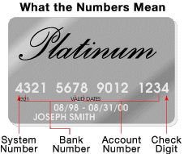

We use our credit cards almost everyday, it's the easiest way to spend, but what exactly is that little black strip?
The stripe on the back of a credit card is a magnetic stripe, often called a magstripe. The magstripe is made up of tiny iron-based magnetic particles in a plastic-like film. Each particle is really a very tiny bar magnet about 20 millionths of an inch long.
Your card also has a magstripe on the back and a place for your all-important signature. The magstripe can be "written" because the tiny bar magnets can be magnetized in either a north or south pole direction. The magstripe on the back of the card is very similar to a piece of cassette tape fastened to the back of a card. (See How Tape Recorders Work.) Instead of motors moving the tape so it can be read, your hand provides the motion as you "swipe" a credit card through a reader or insert it in a reader at the gas station pump. On the next page, see how information is stored in the mag stripe and read by different types of machines.
Mag Stripe Formats
There are three tracks on the magstripe. Each track is .110-inch wide. The ISO/IEC standard 7811, which is used by banks, specifies:
-
Track one is 210 bits per inch (bpi), and holds 79 six-bit plus parity bit read-only characters.
-
Track two is 75 bpi, and holds 40 four-bit plus parity bit characters.
-
Track three is 210 bpi, and holds 107 four-bit plus parity bit characters.
Your credit card typically uses only tracks one and two. Track three is a read/write track (that includes an encrypted PIN, country code, currency units, amount authorized), but its usage is not standardized among banks. The information on track one is contained in two formats -- A, which is reserved for proprietary use of the card issuer, and B, which includes the following:
-
Start sentinel -- 1 character
-
Format code="B" -- 1 character (alpha only)
-
Primary account number -- up to 19 characters
-
Separator -- 1 character
-
Country code -- 3 characters
-
Name -- 2-26 characters
-
Separator -- 1 character
-
Expiration date or separator -- 4 characters or 1 character
-
Discretionary data -- enough characters to fill out maximum record length (79 characters total)
-
End sentinel -- 1 character
-
Longitudinal Redundancy Check (LRC), a form of computed check character -- 1 character
The format for track two, developed by the banking industry, is as follows:
-
Start sentinel -- 1 character
-
Primary account number - up to 19 characters
-
Separator -- 1 character
-
Country code -- 3 characters
-
Expiration date or separator -- 4 characters or 1 character
-
Discretionary data -- enough characters to fill out maximum record length (40 characters total)
-
LRC -- 1 character
There are three basic methods for determining that your credit card will pay for what you're charging:
-
Merchants with few transactions each month do voice authentication, using a touch tone phone.
-
Electronic data capture (EDC) magstripe card swipe terminals are becoming more common -- so is having you swipe your own card at the checkout.
-
Virtual terminal on the Internet
This is how it works: After you or the cashier swipes your credit card through a reader, the EDC software at the point of sale (POS) terminal dials a stored telephone number via a modem to call an acquirer. An acquirer is an organization that collects credit authentication requests from merchants and provides a payment guarantee to the merchant. When the acquirer company gets the credit card authentication request, it checks the transaction for validity and the record on the magstripe for:
-
Merchant ID
-
Valid card number
-
Expiration date
-
Credit card limit
-
Card usage
Single dial-up transactions are processed at 1200-2400 bps, while direct Internet attachment uses much higher speeds via this protocol. In this system, the cardholder enters a personal identification number (PIN), using a keypad. If the ATM isn't accepting your card, your problem is probably either:
-
Dirty or scratched magstripe
-
Erased magstripe (The most common causes for erased magstripes are exposure to magnets, like the small ones used to hold notes and pictures on the refrigerator, and a store's electronic article surveillance (EAS) tag demagnetizer.)
Source: "How does a magnetic stripe on the back of a credit card work?" 14 April 2008. HowStuffWorks.com. http://money.howstuffworks.com/personal-finance/debt-management/magnetic-stripe-credit-card.htm 17 June 2015.
Still Curious? Here are some related links for more information.
- More About Audio/Video Recording: miraculousfacts.blogspot.com
- How Mobile Card Readers Work: quora.com
- And for the very interested....
Build Your Own Mobile Card Reader: creativedistraction.com